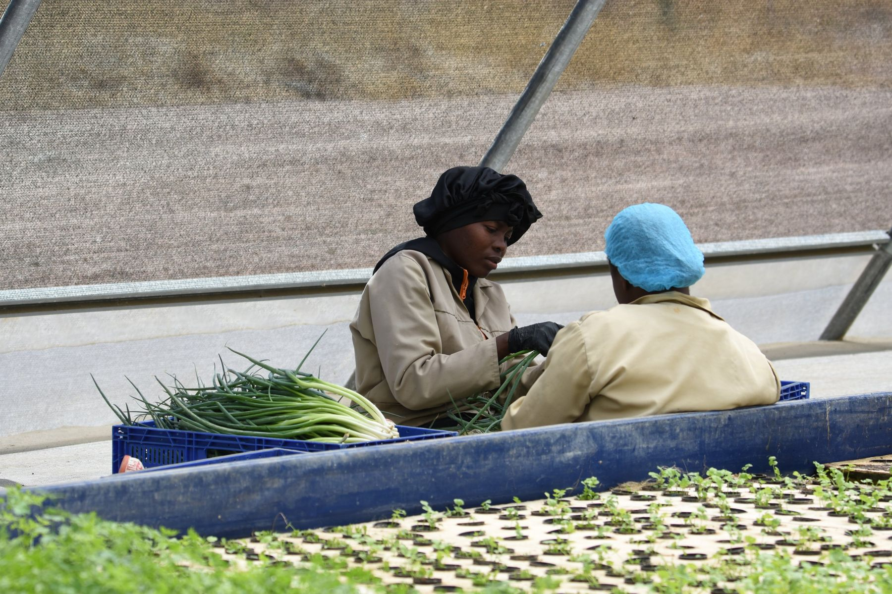
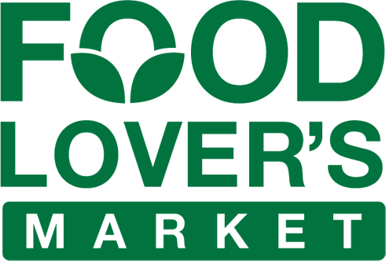
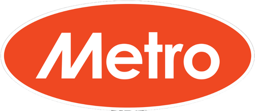
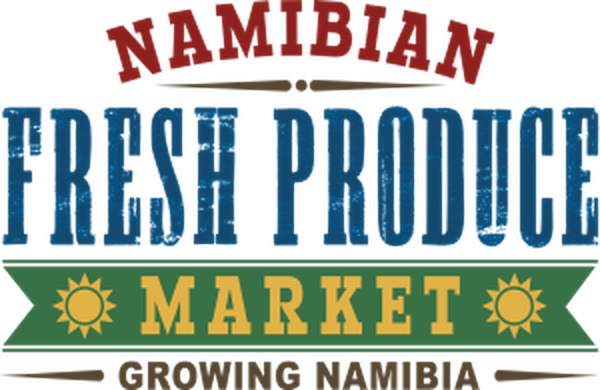

A local supplier you can plan around.
Buyers do not need another supplier. They need one that holds specification every week of the year. Weekly programmes, custom packs, short lead times, and one person who answers the phone.
Consistency
Weekly planting to a fixed programme means weekly supply to a fixed specification, summer and winter.
Shelf life
Product is washed, dried and packed in a high-care facility and kept in the cold chain from harvest to delivery. It reaches you days fresher than imported stock.
Custom packs
Pack sizes, labels and artwork to your specification. [Private label to be confirmed before launch.]
Compliance
Local GAP certified under Primary Farm Assurance, and registered with the Namibian Agronomic Board. [Market Share Promotion wording to be confirmed before launch.]

Freshmark for Checkers, SPAR, Food Lover's Market, Metro and the Namibia Fresh Produce Market, as well as wholesalers and food-service customers.



Start a conversation
Tell us what you need each week and we will come back with a programme and a price list.
Clifford Steyn, Sales
+264 831 666 301
clifford.steyn@oribi.com.na
Ordering by WhatsApp catalogue and the trade presenter are available on request.